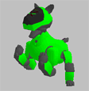

|
|
| Skitter Tutorial -
Situp Dances |
Contents of this website are freeware and/or copyrighted material, and may not be sold
under any circumstances.
Email: dogsbody@dogsbodynet.com
Home:
https://dogsbodynet.com
|
Making a situp dance!
Making a situp dance -- one where
AIBO's arms are off the floor -- can be challenging.
Keeping AIBO's balance, making sure the servo's don't overload, etc...
Skitter now includes a library of dance snippets making situp dances much easier.
|
Goals for this tutorial:
ERS-7 owners please note certain steps differ slightly.
Let's get started!
|
1.0
Create Skit & Load the Music
|
(1) |
Start
Skitter. Create a new skit, or open one from before.
|
|
|
|
(2a)
|
ERS-110/210/220/310:
We want AIBO sitting, so...
- From the Edit Menu, click "Select All".
- From the Motion Menu, click "Set Pose",
then "Sit Position".
- Hit the Delete key to remove the blank motion.
|
|
| (2b) |
ERS-7:
We want AIBO
sitting up, so...
- From the Edit Menu, click "Select All".
- From the Motion Menu, click "Set Pose",
then "Situp Position".
- Position orange cursor at time 63 (middle of blank
motion).
|
|
|
|
(3)
|
For this skit, we'll be using a short MIDI tune. Click here
to download. Save on your desktop, or
somewhere convenient.
|
|
|
|
(4)
|
To use this MIDI file, go to the Sound
menu and select "Replace
Sound...". Navigate to where you saved the tune
& click "Open".
Tip: Replace Sound works with wave files (AIBO compatible)
also!
|

|
|
|
(5) |
ERS-110/210/220/310: Select "Sound Start Time" on the Sound menu. In the
Frames box enter a value of 235. The reason will become
clear later.
ERS-7: Enter
a frames value of 63 instead.
|
|
|
(1) |
From the "View" Menu,
click "Library".
The library bar appears along the right border.
|
 |
|
|
(2) |
There are a number of library categories, mainly for different postures.
Feel free to explore a bit. It works just like Windows Explorer.
Click the + symbol to open folders.
To preview folder entries, select then click the start
button (below the 3D AIBO).
For more info on the library, see chapter 8
of the documentation. |
|
| 3.0
Copying from the Library |
(1) |
ERS-110/210/220/310:
In the library, open the "Posture
Changes" folder. Click on the "Sit_to_Situp_Dance"
entry.
ERS-7:
Skip to Making a Dance below.
|
|
|
|
(2) |
Click the right mouse button, and choose "Copy" from the popup
menu (or use the CTRL-C shortcut). Do not use
the
toolbar Copy button.
|
|
|
|
(3) |
On the toolbar button click "Paste"
(or use the CTRL-V shortcut). This pastes the posture
change into the motion editor.
Note: Be careful not to move the orange marker afterwards.
The posture change takes 235 frames (for the
110/210/220/310). Recall the sound start value we entered
above. They're the same! Therefore, AIBO won't start
playing music until he's sitting up. ERS-7 owners used a
smaller value, since AIBO started already sitting up.
|
|
|
(1) |
Now the
fun part. Open the library "Situp
Dance Moves"
folder. There are lots of short dance snippets available
there. The snippets are mostly 1 or 2 seconds long.
|
|
|
|
| (2) |
Click on "situp_right2".
Use
the right-click menu "Copy",
toolbar
"Paste" sequence, to append to
motion editor.
|
|
|
(3)
|
Now append
the following in order (same technique):
situp_left2
situp_stretch1 (1st time)
situp_stretch1 (2nd time)
situp_shuffle1
situp_right2
situp_left2
situp_chicken2
situp_touch_right
|
|
|
|
(4) |
ERS-110/210/220/310 Only: We must transition AIBO
back to sitting. From
the
library "Posture Changes"
folder, append "Situp_Dance_to_Sit".
|
|
|
|
| (5) |
Now some finishing
touches. Add tail wagging & happy LED's.
Refer to tutorials one and two for a refresher if
needed.
The tailwag wizard might cause minor speed warnings (servos drawn in
red). Not to worry. Use "Fix Fast Servos" on the Motion menu to cleanup.
|

|
|
|
(6) |
Save
it!
You're done! Congratulations!
From the Edit Menu, select AIBO Window.
Click the Start button & watch Aibo dance!
The completed dance is available here also: 110, 210,
220, 310, 7
Got a question? Ask Dogsbody!
|
|
|
| (1) |
The
library "Situp Dance Moves" are in 1 second multiples.
Songs with a 60
or 120 tempo (ie: 1 or 2 beats per second) are easiest to
use.
For music with different tempos, try the Sound menu "Scale
Sound"
command to make music play faster/slower. Alternatively,
see the next hint to make the motions move faster/slower instead.
|
|
|
|
(2)
|
After assembling all
your dance moves, use the Motion menu "Scale
Motion..." command to better align AIBO movement &
music. Note you can
easily make AIBO move -too- fast with this approach.
You'll almost always need to tweak dances after real world AIBO
testing. AIBO isn't 100% predictable and motion/music get out of
sync.
|
|
|
|
| (3) |
Sound
files should not end before movement stops. If
necessary add silence on the end. AIBO's sometimes
twitch noticeably if sound stops during active movement.
In WAVE files, move the orange marker after the music & use "Insert
Silence" on the Sound menu.
In MIDI files, add a very-low note after the tune ends (they are
inaudible on AIBO). Examine the tutorial cantina_aibo tune for an example. |
|
|
|
| (4) |
Some
of the library dance snippets technically move "too fast".
The motion editor highlights servo movements in red.
When used sparingly this isn't a problem. The servos in question
aren't under load. In fact, AIBO's own skits regularly
violate the speed limits. However, Skitter will prompt you to
fix them when saving.
If you're concerned, from the Motion menu select "Fix
Fast Servos".
|

|
|
Got a question? Ask Dogsbody!
|
|
Legalese: These programs are provided AS IS without any warranty, expressed or implied.
This includes without limitation the fitfulness for a particular purpose or
application. People using the software bear all risk
as to its quality and performance. The user of the software
is responsible for any damages whether direct, indirect, special,
incidental or consequential arising from a failure of these programs to operate in
any manner desired. Etc, etc...
"AIBO" is a registered trademark of Sony Corporation.
"AIBO Master Studio", "R-Code", and "Memory Stick" are trademarks of Sony Corporation.
|
|